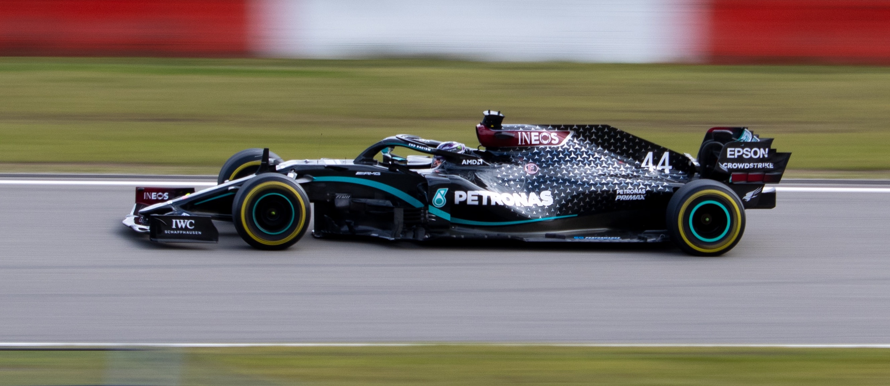
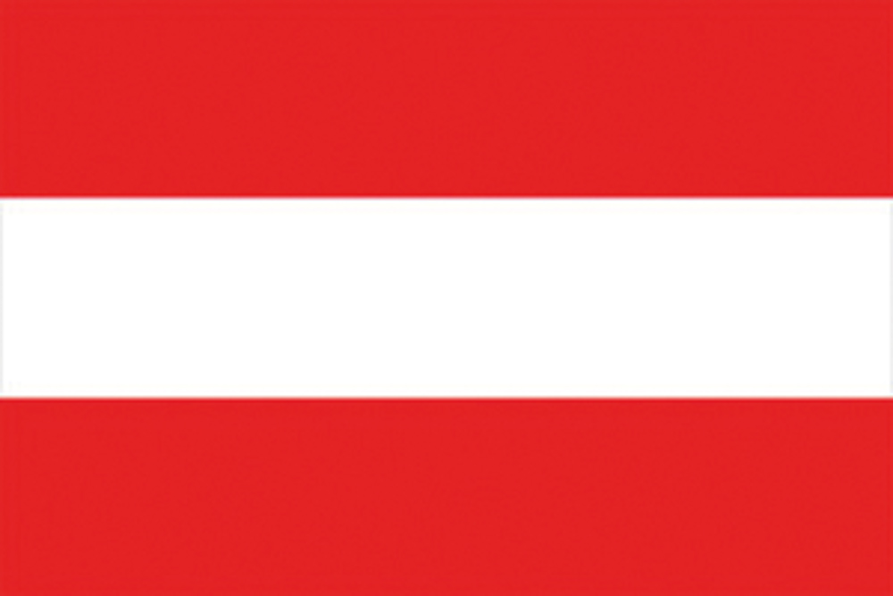

Página Principal
Temporada 2020
La temporada 2020 de Fórmula 1 fue la 71.ª edición del Campeonato Mundial de Fórmula 1 de la historia.
Cumpliéndose 70 años de la creación del campeonato en 1950.
Lewis Hamilton logró su séptimo título Mundial de Fórmula 1 igualando a Michael Schumacher; al mismo tiempo Mercedes consiguió su séptimo título de constructores de forma consecutiva batiendo un récord en la categoría.
La temporada terminó con 5 ganadores distintos:  Lewis Hamilton (11),
Lewis Hamilton (11),  Valtteri Bottas (2),
Valtteri Bottas (2),  Max Verstappen (2),
Max Verstappen (2),  Pierre Gasly (1) y
Pierre Gasly (1) y  Sergio Pérez (1).
Sergio Pérez (1).
Pilotos con más títulos de la Fórmula 1
| Número | Piloto | Títulos | Años |
|---|---|---|---|
| 1º | 7 | 1994, 1995, 2000, 2001, 2002, 2003, 2004 | |
| 2º | 7 | 2008, 2014, 2015, 2017, 2018, 2019, 2020 | |
| 3º | 5 | 1951, 1954, 1955, 1956, 1957 | |
| 4º | 4 | 2010, 2011, 2012, 2013 | |
| 5º | 4 | 1985, 1986, 1989, 1993 |
Constructores con más títulos de la Fórmula 1
| Número | Constructor | Títulos | Años |
|---|---|---|---|
| 1º | 16 | 1961, 1964, 1975, 1976, 1977, 1979, 1982, 1983, 1999, 2000, 2001, 2002, 2003, 2004, 2007, 2008 | |
| 2º | 9 | 1980, 1981, 1986, 1987, 1992, 1993, 1994, 1996, 1997 | |
| 3º | 8 | 1974, 1984, 1985, 1988, 1989, 1990, 1991, 1998 | |
| 4º | 7 | 1963, 1965, 1968, 1970, 1972, 1973, 1978 | |
| 7 | 2014, 2015, 2016, 2017, 2018, 2019, 2020 | ||
| 6º |  Red Bull | 4 | 2010, 2011, 2012, 2013 |